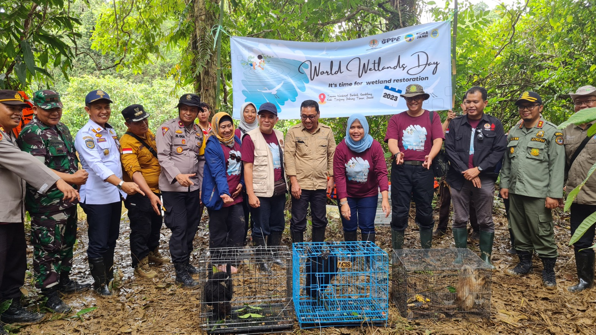
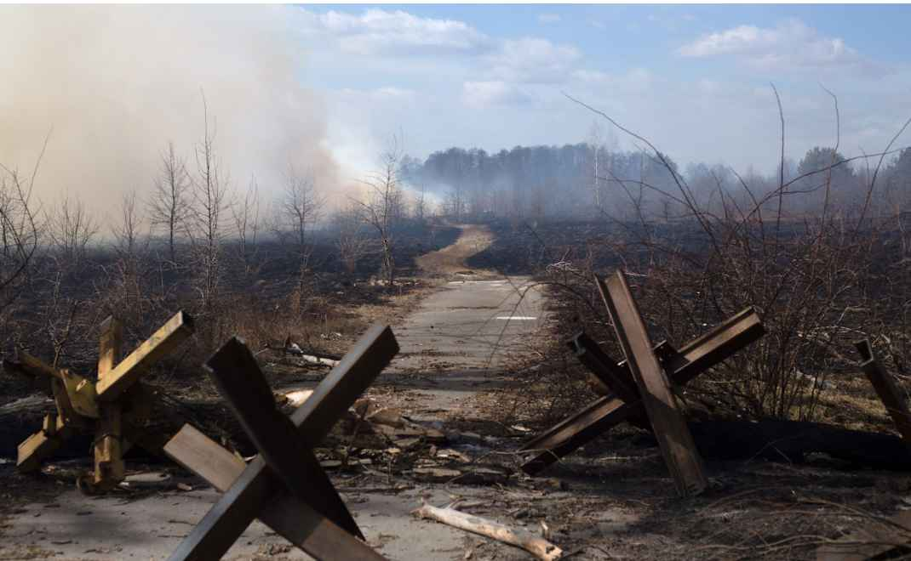
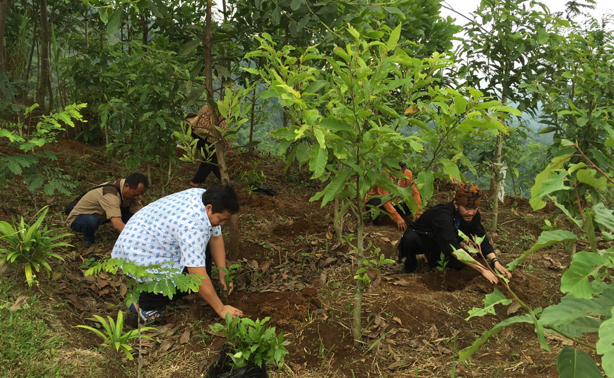
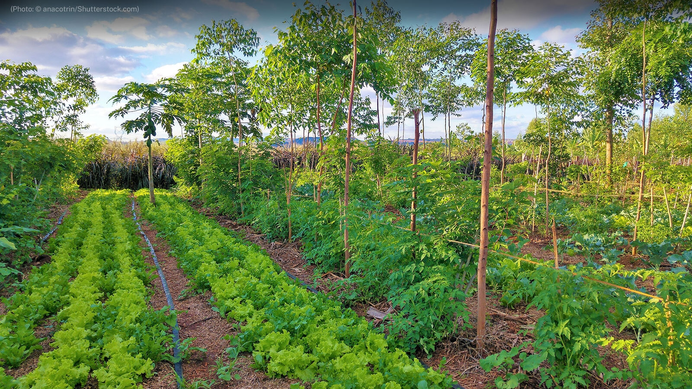
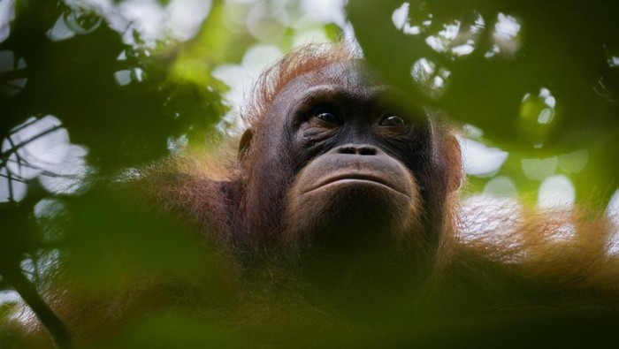
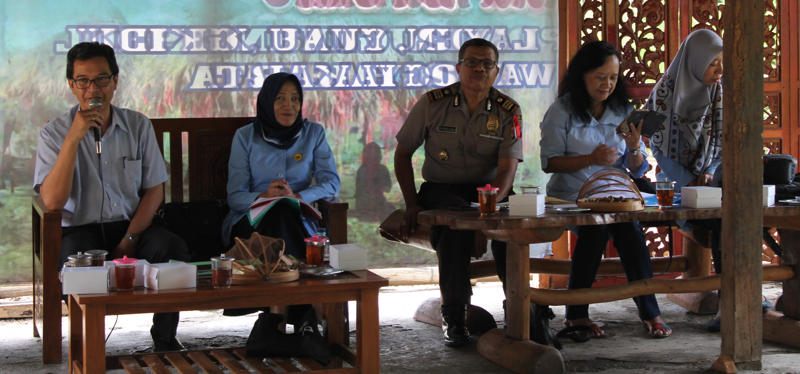

Indonesia is the country with the largest number of tropical forests in the world. Indonesia's forests are a huge source of biodiversity and are essential for human survival. However, in recent decades, Indonesia has experienced significant forest destruction, mainly due to deforestation and conversion of forest land into agricultural land, plantations and settlements.
This has resulted in habitat loss for many animal and plant species, as well as negative impacts on communities that depend on forests for their livelihoods, such as indigenous tribes and smallholder farmers. In addition, deforestation also impacts global climate change, as forests act as carbon dioxide sinks.
To solve this problem, we at Indonesian Forest Conservation are here to educate and participate in preserving forests. Together with various parties we started forest conservation and land restoration programs, including establishing forestry conservation companies such as Perusahaan Konservasi Kehutanan Indonesia that focus on preserving forests and biodiversity. These programs aim to protect Indonesia's natural resources, reduce carbon dioxide emissions, and improve the welfare of local forest-dependent communities.
News

Tree Planting and Animal Release to Mark World Wetlands Day 2023
The commemoration of World Wetlands Day (WWD) 2023 was marked by the implementation of a series of tree planting activities, animal releases and dialogues centered in the Berbak Sembilang National Park area in Jambi (February 23, 2023).

Environmental Damage from the Russia-Ukraine War
Since Russia invaded their country a year ago, that habit has been broken. The once lush Oskil River has been destroyed. Villages have been destroyed, residents displaced, trees scorched, birdsong no longer heard, replaced by the rumble of steel tanks perched on the banks of the river (March 2, 20023).
Activities
Reforestation

Reforestation is a series of reforestation activities carried out in a forest area or an area that will be used as a forest area. Reforestation activities are carried out in forest areas that have been damaged or non-forest areas that will be converted into forest areas. Reforestation is one of the efforts to repair damaged forest areas, either as a result of damage due to human exploitation or damage due to natural conditions.
Agroforestry

Agroforestry is a form of resource management that combines forest or woody tree management activities with the cultivation of short-term commodities or crops, such as agricultural crops. agroforestry can improve the quality of natural resources, especially soil and water. The many types of plants that can be planted in one area of agricultural land or forest can help in land and water conversion.
Wild Animal

Wildlife conservation refers to the practice of protecting, preserving and sustainably using according to the principles of the World Conservation Strategy for wild species and their habitats. Wildlife conservation is also important to do considering that wildlife conservation will encourage the breeding of endangered animal offspring, especially animals that give birth for a long time, so their sustainability is threatened.
Forestry Extension

Forestry extension is a learning process for key actors and business actors so that they are willing and able to help and organize themselves in accessing market information, technology, capital and other resources, as an effort to increase productivity, business efficiency, income and welfare, as well as increase awareness in the preservation of environmental functions.
About Us
Indonesian Forest Conservation movement has been around since 2023 and involves various parties such as the government, NGOs, and communities. The main goal of the forest conservation movement is to protect Indonesia's natural resources and maintain biodiversity, as well as to improve environmental conditions that have been damaged.